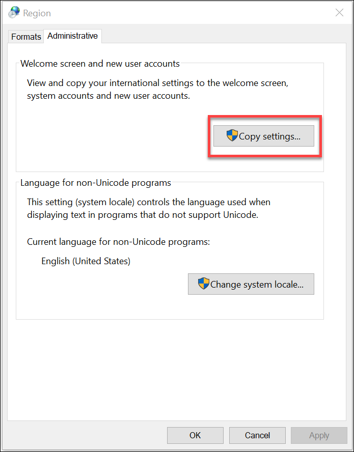
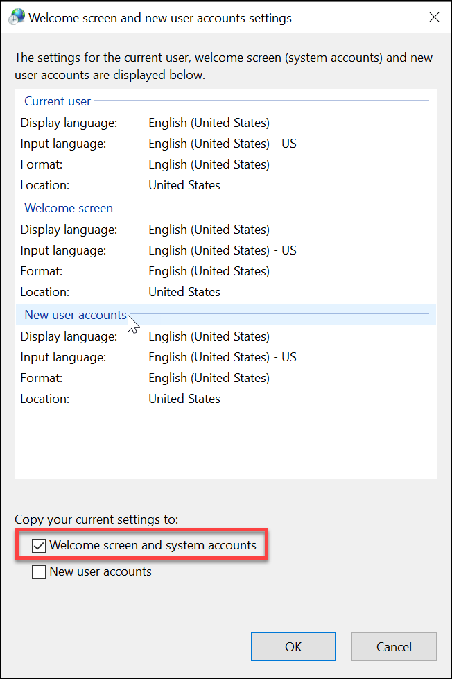

Synchronize Regional Settings of System Account with Regional Settings of Current User Account
- The Desigo CC system account is set to SYSTEM user and the international settings (date and time format) of the user logged into the Desigo CC server machine are changed. In this situation, you need to synchronize the regional settings of the SYSTEM account with the regional settings of your current user account (user logged into the Desigo CC server machine). Perform the following steps to synchronize the regional settings.
- Login to the Desigo CC server machine with a user account, set with the desired regional settings.
- Navigate to the Control Panel and select Region.
- The Region dialog box displays.
- Click the Administrative tab and thereafter click Copy settings.

- The Welcome screen and new user account settings dialog box displays.
- Select Welcome screen and system accounts and click OK.

- The SYSTEM account regional settings are now synchronized with the current user account regional settings.
- In Desigo CC, navigate to Applications > Reports and select the report you want to execute.
- In the Extended Operation pane, click Execute.
- The date time format of the data displayed in the report viewer and in the PDF are identical.
- Set the same international settings (date and time format) on all client machines also.
- In case of domain environment where Desigo CC system account is set to domain user, it is recommended that the international settings (date and time format) of all Windows users shall be same, so that the date and time format displayed in the Report Viewer and in the output documents is identical.